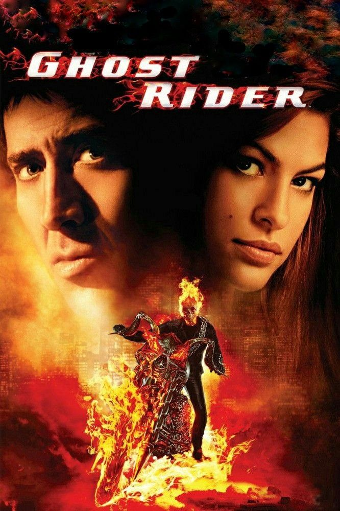
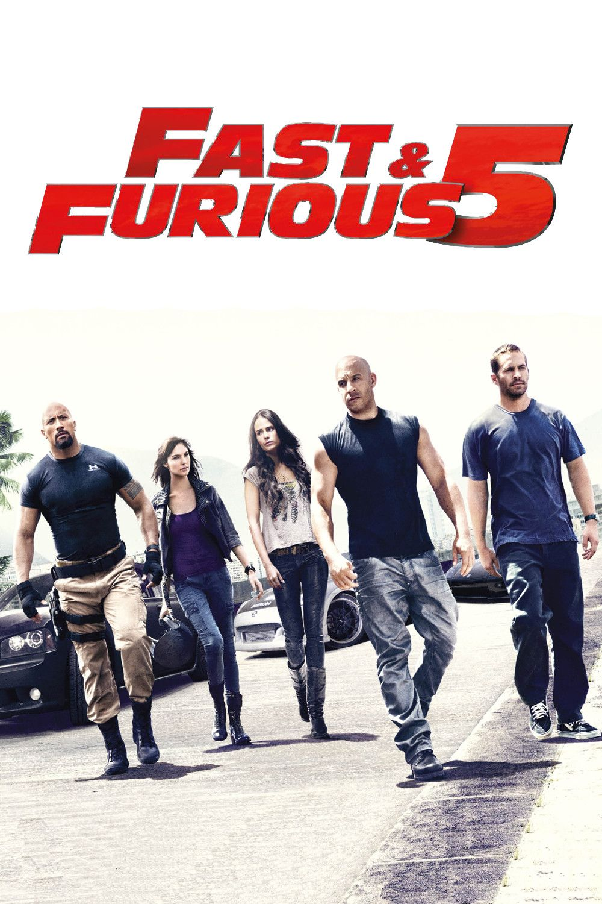

Ghost Raider

Fue la primera película que vi de niño. Me impactó ver la transformación de Johnny Blaze en el Vengador Fantasma y la escena en el desierto junto a Carter Slade, cuando van a detener a un demonio en San Venganza.
Linterna Verde

Recuerdo que fui a una plaza con mis abuelos donde había un stand de Linterna Verde en el que podías jugar su videojuego y te pintaban el antifaz de Linterna Verde. Hasta hoy me gusta la película, sobre todo cómo crean objetos con el anillo.
Un Show Mas

Esta película la vi con un tío y mi hermano; fue mi segunda película de superhéroes después de X-Men. Me gustó mucho ver el poder de Magneto, especialmente en la escena donde detiene los misiles y luego decide dejarlos caer al agua gracias a la intervención de su amigo.
Rapidos Y Furiosos

De todas las películas de Rápidos y Furiosos, esta fue la primera que vi y de ahí nació mi gusto por los coches. Recuerdo que planean robar una bóveda con mucho dinero a un hombre poderoso en Brasil; toda la acción y la preparación me parecieron impresionantes. Aunque es una película, la forma en que realizan el robo me resultó maravillosa.